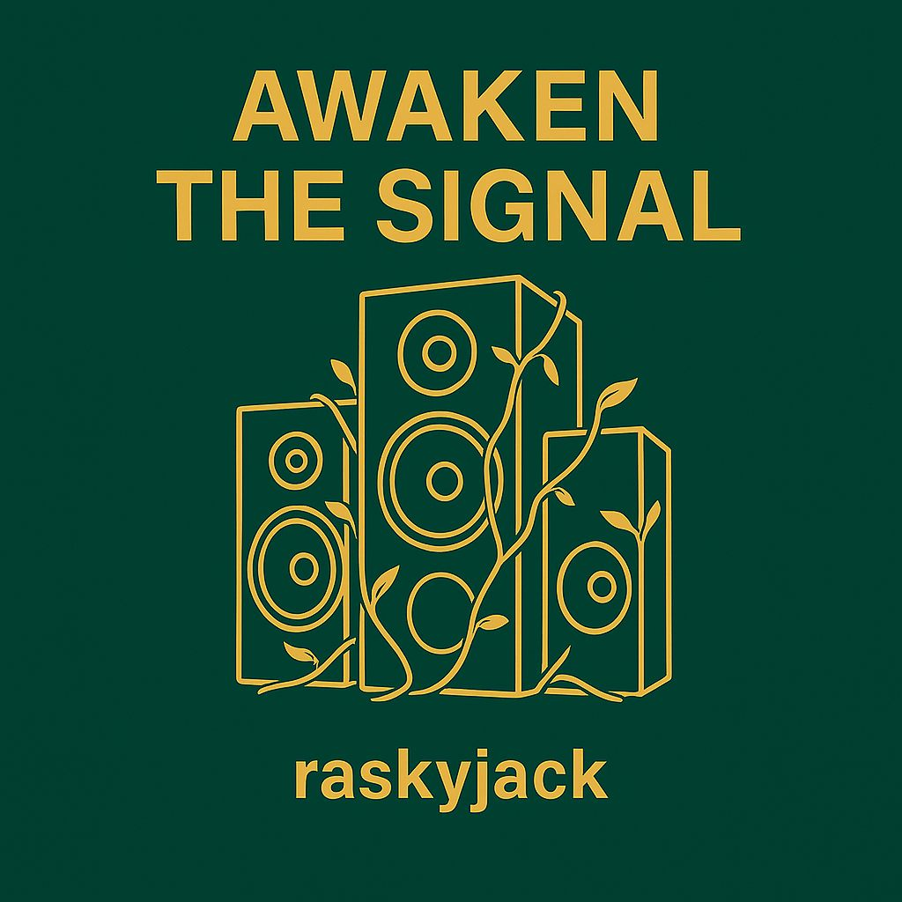
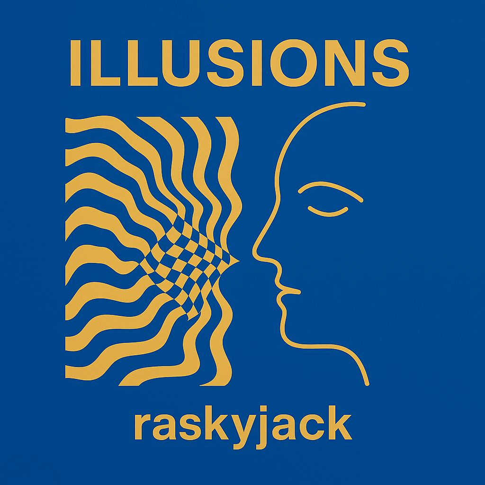

Personal brand / creative portfolio
Rasky
Creative products, music, hospitality ideas and AI-built tools - designed with energy, taste and ambition.
I am Jack: a hospitality manager in Hove/Sussex building across software, AI, music, design, games and business concepts. The thread is practical creativity: spotting useful ideas, learning quickly, making prototypes and caring about how things feel to the people using them.
Builder, learner, operator
Creative work with a real-world service mindset.
Rasky is not just a collection of side projects. It is a signal: I care about high standards, customer experience, memorable brands, useful tools and ideas that can become something stronger with the right people around them.
About Jack / Rasky
Ambitious, practical and still close to the work.
My day-to-day work in hospitality keeps me close to what matters: service timing, guest confidence, team communication, details, standards and the atmosphere that makes people want to come back.
Outside that, I build and explore. I use AI and modern tools to move faster, test ideas, shape prototypes and learn the parts I do not yet know. I am interested in product design, music, game worlds, hospitality concepts, branding, automation and anything that turns creative energy into real value.
Featured projects
Curated work across products, hospitality, music and visual ideas.
Some projects are live or working prototypes, others are early concepts. They are presented honestly, with the strongest local assets found on this machine.
Raskys hospitality vision
A premium coastal venue concept built around drinks, music, service and community.
Raskys is a future hospitality/venue idea inspired by high-standard coastal hospitality, modern bars and places that feel alive without losing quality. It could work in the right Brighton/Hove-style setting, or another strong coastal or high-footfall location.
The concept is flexible: a premium cocktail and wine bar with warm service, live music, curated events, visual identity, memorable drinks and a brand that could scale if the location, team and execution are right.
- Quality drinks and a tight, recognisable menu
- Warm guest experience, not cold luxury
- Live music, events and creative community energy
- Coastal atmosphere with premium but relaxed standards
- Scalable brand thinking across design, menu and marketing
Menu flavour
Signature drink names as brand texture.
Why work with me
For collaborators, investors and people who want to build something real.
Capabilities
Creative range with practical execution.
Journey
A builder's path across service, sound, software and story worlds.
Music / raskyjack
An artist identity sitting alongside the product and brand work.
Raskyjack gives the portfolio a creative signal beyond software: artwork, sound, promotion, visual identity and the discipline of publishing work for an audience.


Contact / collaboration
Interested in building something, collaborating, investing or talking through an idea?
I am open to serious conversations around products, hospitality concepts, creative projects, AI tools, music, branding and business opportunities.